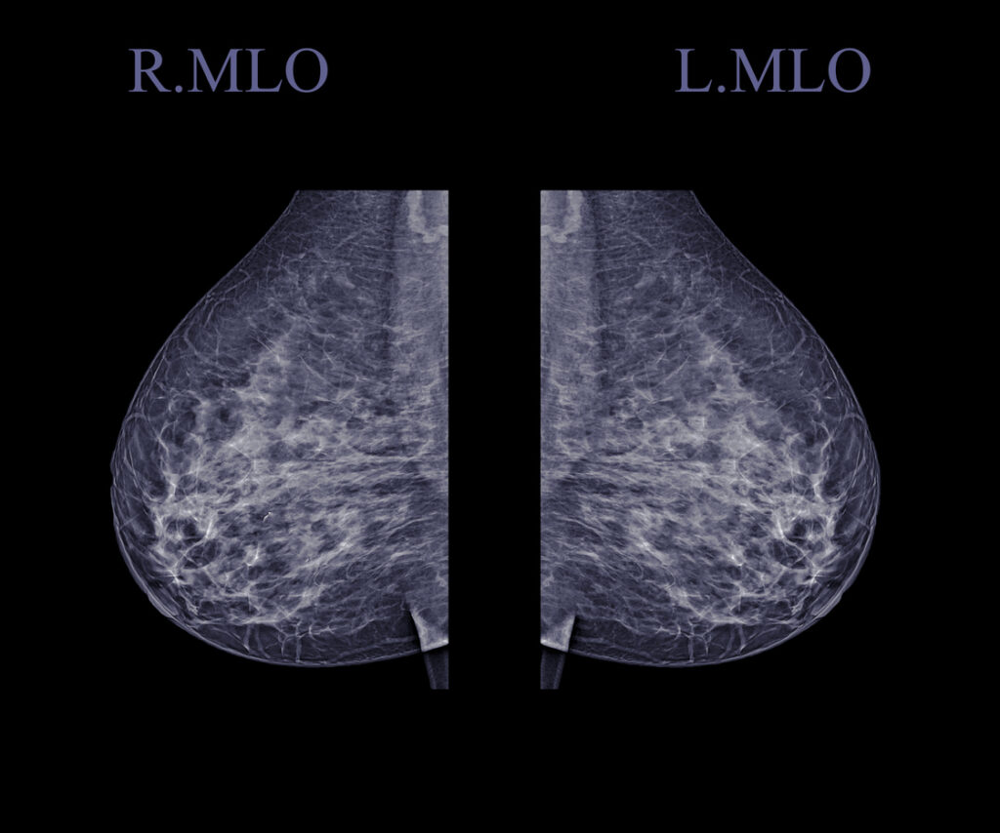

Although crucial for early detection and treatment, there is no easy answer to the question, “What does a breast cancer screening cost?” Whether you have insurance, choose not to use insurance, or can’t afford insurance, you could get very different answers.
October is Breast Cancer Awareness Month. This puts the spotlight on breast cancer screenings and mammograms. Essential to early detection and treatment, options are available regardless of insurance status. Additionally, there are organizations and programs that provide free to low-cost screenings for low-income women.
What Determines Breast Cancer Screening Costs?
The cost of your mammogram varies greatly across the country and will depend on various factors:
- Your insurance coverage and network, if any
- Your out-of-pocket costs or cash price
- Location of the facility
- Whether the facility is hospital-affiliated or a free-standing clinic
- Whether it is a screening or a diagnostic mammogram
- Whether 2-D or 3-D imaging is used
Why You Might Get Billed for a Mammogram
If you have health insurance, yearly breast cancer screenings and mammograms may be covered at no cost to you. However, there are some common reasons why you may get a bill for out-of-pocket costs, like copays or deductibles, or a surprise bill.
#1. Your Healthcare Coverage is not ACA-Compliant
Qualified Health Plans (QHPs) are health insurance plans that are regulated by the Affordable Care Act (ACA). These plans cover preventive care, like mammograms at no cost to the patient. QHPs are available from the Federal Insurance Marketplace or outside the exchange from licensed insurance brokers or agents.
QHPs cover screening mammograms for women age 50 and older every 2 years, or age 40-49 as recommended by your primary healthcare provider, or if you have higher risks for breast cancer.
If your insurance or healthcare coverage does not comply with ACA mandates, your screening mammogram may not be covered or there may be out-of-pocket costs.
#2. You Went Out-Of-Network:
It’s important to understand your coverage. Depending on your health plan, going to an out-of-network provider could incur additional costs. However, even if the facility is in-network, some specialists working within the facility might not be.
Before scheduling any medical procedure, it’s crucial to verify with both the facility and your insurance company that all providers involved are in-network. After taking these precautions, the No Surprises Act may protect you if you are unknowingly treated by an out-of-network provider in an in-network facility.
#3. You Had a Diagnostic Mammogram:
A follow-up mammogram may be considered diagnostic if needed because of an abnormal result or specific concern. Unlike screening mammograms, diagnostic mammograms are not considered preventive care. They may be subject to out-of-pocket costs, depending on your plan.
Confirm with your provider that you are receiving a screening mammogram, not a diagnostic, especially if you have had breast problems in the past.
#4. There Were Ancillary Services:
Sometimes, you may receive additional services or tests performed during the mammogram and billed separately. These ancillary services are supportive or diagnostic measures that aid a healthcare provider in providing treatment. These can also be covered by insurance but may involve out-of-pocket costs depending on your plan.
Some examples of ancillary services used in breast cancer screening could include:
- Additional imaging tests, like X-rays, MRI, CT scan, or ultrasound
- Physician and surgeon fees
- Radiologist and/or anesthesiologist fees
- Procedures like biopsies (pathology)
- Genetic testing and genetic counseling
- Laboratory tests
- Pharmacy and drug costs
- Facility fees
Ask your healthcare provider to explain all potential services that may be performed during the mammogram, and inquire about the costs.
What To Do if You are Insured
Familiarize yourself with your insurance policy’s coverage details and be prepared for any expected costs. Request an Advanced Explanation of Benefits (AEOB) from your insurance company when scheduling or at least 3 days in advance of the procedure.
If you have access to a Health Savings Account (HSA) or Flexible Spending Account (FSA), consider using them to cover these expenses.
What To Do if You are Uninsured or Self-Pay
If you’re uninsured or not using insurance (self-pay), request good faith estimates when scheduling healthcare services. Request them from all healthcare providers and facilities involved in your scheduled service or procedure at least 3 business days in advance. Request to include:
- Expected charges for furnishing the scheduled service or item
- Any ancillary items or services reasonably expected to be provided in conjunction with those items or services, including those provided by another provider or facility
- Expected CPT billing and diagnostic codes for these items or services
Learn More about Estimating Costs
Learn more in our article, How to Estimate Out-of-Pocket Healthcare Costs – Without or Without Insurance.
#5. Coding Errors
After you receive a healthcare service, billing mistakes or coding errors are common. 80% of all medical bills have mistakes!
Protect yourself by applying the 3 Steps of the Only Right Way to Pay a Medical Bill.
- Request an itemized bill with CPT codes from your provider. The CPT codes most commonly used for screening mammograms are:
- 77067 Screening mammography, including computer-aided detection; bilateral
- 77063 Screening digital breast tomosynthesis; bilateral (list separately in addition to code for primary procedure)
- Review your bills carefully. Look up CPT descriptions to see if they match the services you received. Then look up the Medicare rate to find the lowest rate for that CPT code. If you suspect errors contact the billing department or insurance company to dispute the charges.
- Negotiate an interest-free payment plan based on the Medicare rates with the provider.
Learn more in our blog article, The Best Way to Pay Medical Bills in 3 Steps.
#6. Balance Billing
Balance billing, also called medical balance billing or surprise balance billing, occurs when an in-network healthcare provider bills a patient for the difference between what the provider charges and what the insurance company pays.
Learn how to fight balance billing in our blog article, “What is Balance Billing with Health Insurance, and How Can You Fight It?”

Mammogram Near Me
If not locked into an insurance network, you can shop around for the best price for a mammogram using the FDA’s database of certified mammography facilities.
Additionally, multiple state, federal, and non-profit organizations help underinsured and low-income women find affordable screenings.
What if I Can’t Afford a Breast Cancer Screening or Mammogram?
If you are uninsured, underinsured, or can’t afford your breast cancer screening or mammogram there are resources for help. Each organization and program has its own qualifying criteria.
- Freemammograms.org is a database for finding free to low-cost mammograms
- The National Association of Free and Charitable Clinics is a database of free to low-cost charitable clinics
- Federally Qualified Health Centers (FQHCs), which include Community health centers (CHCs) and Rural health clinics (RHCs) provide low-cost primary healthcare, including mammograms
- The American Breast Cancer Foundation’s (ABCF) Breast Cancer Assistance Program
- National Breast Cancer Foundation’s National Mammography Program
- National Breast and Cervical Cancer Early Detection Program
- Susan G. Komen Foundation
- United Breast Cancer Foundation
- Inquire about your medical center’s charity care or financial assistance programs.
- Read more about options for people who can’t afford health insurance in our article, What If I Can’t Afford Health Insurance?
Takeaways
- The cost of your mammogram will depend on various factors, including healthcare coverage, location, and whether you receive a screening or diagnostic mammogram.
- Qualified Health Plans (QHPs), regulated by the Affordable Care Act (ACA), cover screening mammograms at no cost to the patient, including no copays, deductibles, or coinsurance.
- If insured, understand your coverage and request an Advanced Explanation of Benefits (AEOB) when scheduling or at least 3 days in advance.
- If uninsured, request good faith estimates when scheduling or at least 3 days in advance.
- If you need assistance with the cost of breast cancer screening and mammograms, check out our list of national organizations that may be able to help.